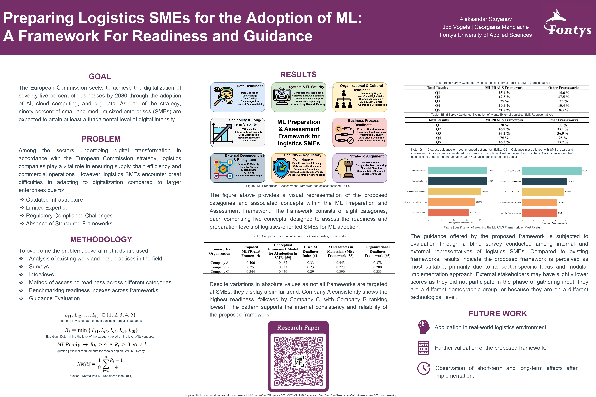

MLPRALS: A Readiness and Guidance Framework for Machine Learning Adoption in Logistics SMEs
Helping logistics-focused SMEs take practical steps toward AI adoption—securely, strategically, and efficiently.
Published: March 10, 2025
The MLPRALS (Machine Learning Preparation and Readiness Assessment for Logistics SMEs) project introduces a structured framework designed to help small and medium-sized logistics enterprises evaluate and enhance their readiness to adopt machine learning technologies. While machine learning offers significant potential to improve forecasting, inventory management, and route optimization, many logistics SMEs struggle with adoption due to outdated infrastructure, limited technical expertise, unclear guidance, and regulatory challenges.

Developed through literature analysis, surveys, interviews, and expert consultation, MLPRALS addresses these barriers by breaking down the adoption journey into eight key categories, each with five progressive readiness levels. These categories include data readiness, IT maturity, organizational culture, business processes, strategic alignment, regulatory compliance, external dependencies, and scalability. SMEs can assess their current position, identify gaps, and receive targeted guidance suited to their operational context.
The framework is sector-specific and modular, meaning it can be applied flexibly regardless of company size or digital maturity. A normalized readiness scoring system allows organizations to track progress over time and compare their status against industry benchmarks. Validation through blind surveys showed that logistics SMEs found MLPRALS to be clearer and more practical than other existing frameworks, particularly because of its detailed, logistics-specific guidance.
By offering both assessment tools and actionable steps, MLPRALS empowers logistics SMEs to move from low or no readiness to confident experimentation and eventual integration of machine learning solutions. It aims to bridge the gap between theoretical AI potential and real-world implementation—making advanced technology more accessible, especially for resource-constrained businesses navigating digital transformation.